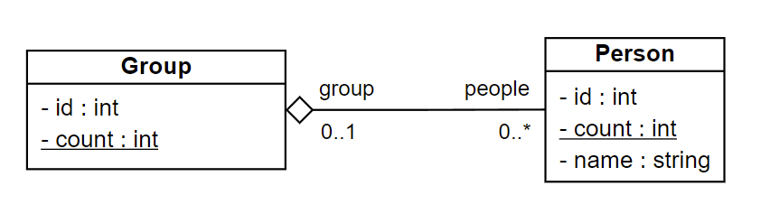
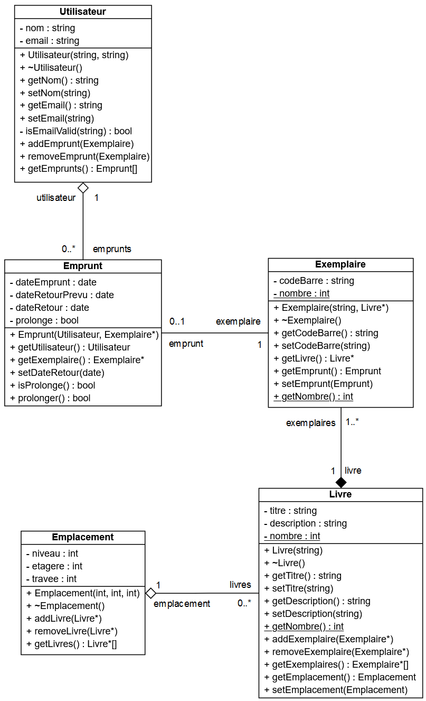
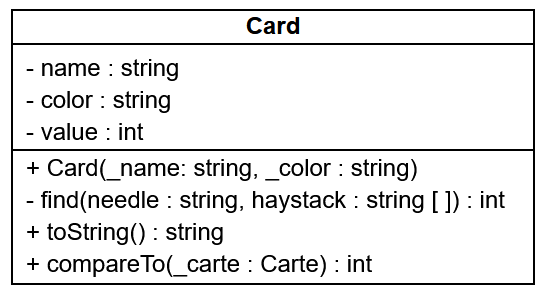

03 - POO level 2
Exercice 1
Sur la base du diagramme de classes ci-dessous, créer le programme qui permet de saisir les noms de plusieurs personnes puis un nombre de groupes à créer.

Le programme se chargera ensuite de répartir automatiquement les personnes dans les groupes.
Finalement il affichera la composition des groupes et le groupe d'appartenance de chaque personne.
Indice
La classe std::vector peut être utile.
Indice
On créera d'abord les personnes, puis les groupes dans le main.
Ensuite on attache les personnes aux groupes et les groupes aux personnes.
On manipulera des pointeurs pour les références afin d'éviter les recopies d'objets.
> ./exo_1.exe
Saisir les noms des personnes à créer (! pour arrêter) :
#1 : Bianca
#2 : Tryphon
#3 : Archibald
#4 : Allan
#5 : Piotr
#6 : Tchang
#7 : Seraphin
#8 : !
7 personnes saisies.
Nombre de groupes à créer : 3
1
Bianca (1)
Allan (4)
Seraphin (7)
2
Tryphon (2)
Piotr (5)
3
Archibald (3)
Tchang (6)
Bianca (1) appartient au groupe 1
Tryphon (2) appartient au groupe 2
Archibald (3) appartient au groupe 3
Allan (4) appartient au groupe 1
Piotr (5) appartient au groupe 2
Tchang (6) appartient au groupe 3
Seraphin (7) appartient au groupe 1
Correction
exo1/person.hpp
#include <string>
#ifndef PERSON_H
#define PERSON_H
using namespace std;
class Group; // On triche pour éviter une mise en abyme infinie des includes croisés.
class Person {
private :
int id;
static int count;
string name;
Group * group; // Pour éviter les recopies d'objets, on utilise un pointeur.
public:
Person(string);
void display();
Group * getGroup();
void setGroup(Group &); // Le passage par référence simplifie l'utilisation de la méthode.
};
#endif
exo1/person.cpp
#include "person.hpp"
#include "group.hpp"
#include <iostream>
#include <string>
using namespace std;
int Person::count = 0;
Person::Person(string _name) {
name = _name;
count++;
id = count;
}
void Person::display() {
cout << name << " (" << id << ")";
}
void Person::setGroup(Group & _group) {
group = & _group;
}
Group * Person::getGroup() {
return group;
}
exo1/group.hpp
#include <vector>
#ifndef GROUP_H
#define GROUP_H
using namespace std;
class Person; // On triche pour éviter une mise en abyme infinie des includes croisés.
class Group {
private :
int id;
vector<Person *> people; // Pour éviter les recopies d'objets, on utilise des pointeurs.
static int count;
public :
Group();
int getId();
void addPerson(Person &); // Le passage par référence simplifie l'utilisation de la méthode.
void display();
};
#endif
exo1/group.cpp
#include "group.hpp"
#include "person.hpp"
#include <iostream>
using namespace std;
int Group::count = 0;
Group::Group() {
count++;
id = count;
}
int Group::getId() {
return id;
}
void Group::addPerson(Person & p) {
people.push_back(&p);
}
void Group::display() {
cout << id << endl;
for (int i = 0; i < people.size(); i++) {
people[i]->display(); // -> car ce sont des pointeurs qu'on manipule
cout << endl;
}
}
exo1/main.cpp
#include <iostream>
#include <vector>
#include <string>
#include "person.hpp"
#include "group.hpp"
using namespace std;
int main() {
vector<Person> allPeople; // Un tableau pour stocker les personnes créées au fur et à mesure.
vector<Group> allGroups; // Un tableau pour stocker les groupes créés.
string input = ""; // Un tampon pour récupérer les noms saisis.
int nbGroups = 0;
system("chcp 65001"); // Passage de la console Windows en UTF-8
system("cls"); // Nettoyage de la console
// Saisie
cout << "Saisir les noms des personnes à créer (vide pour arrêter) :" << endl;
do {
cout << "#" << allPeople.size() + 1 << " : ";
getline(cin, input); // Permet d'autoriser les saisies vides.
// Création d'une nouvelle personne
if (input != "") {
allPeople.push_back(Person(input));
}
} while (input != "");
cout << endl << allPeople.size() << " personne(s) saisie(s)" << endl << endl;
// Création des groupes
do {
cout << "Nombre de groupes à créer : ";
cin >> nbGroups;
} while (nbGroups <= 0);
for (int i = 0; i < nbGroups; i++) {
allGroups.push_back(Group());
}
// Répartition des personnes dans les groupes
for (int i = 0; i < allPeople.size(); i++) {
allGroups[i % nbGroups].addPerson(allPeople[i]);
allPeople[i].setGroup(allGroups[i % nbGroups]);
}
// Affichage des groupes
cout << endl;
for (int i = 0; i < allGroups.size(); i++) {
allGroups[i].display();
cout << endl;
}
cout << endl;
// Affichage des personnes
for (int i = 0; i < allPeople.size(); i++) {
allPeople[i].display();
cout << " appartient au groupe " << allPeople[i].getGroup()->getId() << endl;
}
return 0;
}
Exercice 2

Répondre aux questions suivantes portant sur le diagramme de classes, fruit du travail de conception d’un programme de gestion d’une bibliothèque.
-
Peut-on créer des utilisateurs sans spécifier de nom ? Expliquer.
Correction
Deux réponses sont acceptables, car le diagramme de classes manque de précision sur ce point :
+ Non, il n'y a qu'un constructeur déclaré et celui-ci a deux paramètres `string` qui "logiquement" correspondent aux deux attributs nom et email. + Oui, le constructeur déclaré a deux paramètres `string`, si l'un deux correspond au nom, alors il est possible de lui passer une chaîne de caractères vide... -
Expliquer à quoi correspondent chacun des termes et symboles de la ligne suivante :
isEmailValid(string) : boolCorrection
C'est une méthode et les différents éléments correspondent à :
-
isEmailValid: l'identificateur (le nom) de la méthode ; -
(string): les paramètres de la méthode (les données en entrée), ici une chaîne de caractères ; -
: bool: le type retour de la méthode (les données en sortie), ici un booléen.
-
-
Pourquoi la ligne
+ setEmail(string)de la classeUtilisateurn'a pas de partie avec les:?Correction
C'est un mutateur, une méthode qui modifie un attribut, elle ne renvoie rien, l'UML nous permet de ne pas écrire
: void. -
Peut-on valider le format d’un email avec la méthode
isEmailValiden l’appelant sur un objetUtilisateurcréé dans le programme principal ? Expliquer.Correction
Non, la méthode
isEmailValidest précédée d'un signe-qui signifie que la méthode est privée, c'est-à-dire qu'on ne peut l'appeler que depuis la classe et non en-dehors. -
Peut-on modifier un emprunt après création ? Expliquer.
Correction
Par convention de nommage, on peut déduire que les deux méthodes
setDateRetouretprolongersont des mutateurs, qui permettent de modifier des attributs après sa création. -
Doit-on créer un objet
Empruntpar exemplaire emprunté ou un objetEmpruntpeut-il concerné plusieurs exemplaires d’un coup ? Expliquer.Correction
La cardinalité nous indique qu'un emprunt est relié à un et un seul exemplaire, il faut donc créer un objet
Empruntpar Exeplaireemprunté. -
Les attributs
dateEmpruntetdateRetourPrevude la classeEmpruntn’ont pas de mutateur et le constructeur n’a pas de paramètre de type date. Qu’en déduisez-vous sur la valorisation de ces deux dates ?Correction
Ils sont probablement généré automatiquement dans le constructeur, la date d'emprunt serait la date du système et la date retour calculée à partir d'une règle comme il est courant d'en rencontrer dans les bibliothèques (emprunt de 4 semaines à Laval Agglo par exemple).
-
De quel type est l’attribut
empruntsde la classeUtilisateur. Proposer deux manières différentes de l’implémenter en C++. -
L’attribut
- nombre : intde la classeExemplaireest souligné, qu’est-ce que cela signifie ?Correction
L'attribut est static, il est partagé par tous les objets de la classe.
-
Il n’y a pas de mutateur prévu pour l’attribut
- nombre : intde la classeExemplaire, comment peut-on incrémenter ou décrémenter cet attribut ?Correction
C'est un attribut static, probablement pour compter le nombre d'objets
Exemplairedans le système, donc on incrémente probablement ce nombre dans le constructeur et décrémente dans le destructeur. -
Comment peut-on, à tout moment, connaître le nombre total de documents disponibles dans la bibliothèque ?
Correction
Si l'implémentation proposée à la question précédente est bonne, alors à tout moment, l'attribut
nombrede la classeExemplaire, contient le nombre d'objets dans le système et donc de documents dans la bibliothèque. On peut en récupérer la valeur avec l'instruction :Exemplaire::getNombre();. -
Pourrait-on mettre en place sur la classe
Empruntun attribut- nombre : intavec la même caractéristique qu’à la question 9 pour compter le nombre d’emprunts d’un utilisateur ?Si oui, que doit-on mettre en place ?
Si non, expliquer pourquoi et indiquer comment réaliser cette demande.
Correction
Non, si on mettait cet attribut sur la classe Emprunt, on récupérerai le nombre total d'emprunts (objets
Emprunt) dans le système. On peut récupérer cette information de deux manières, en fonction de l'implémentation de l'attributsUilisateur::empuntsà la question 8 :-
Si emprunts est un vecteur on pourra récupérer le nombre d'emprunts d'un objet Utilisateur avec l'instruction :
u1.getEmprunts().size() -
Si emprunts est un pointeur d'Emprunt (Emprunt *), il faut créer un attribut pour sauvegarder la taille du tableau et un accesseur, on pourra alors récupérer le nombre d'emprunts d'un objet Utilisateur en appelant cet accesseur.
-
-
En utilisant les méthodes disponibles, peut-on à partir d’un objet
Livreremonter jusqu’aux utilisateurs qui en ont emprunté un exemplaire ? Expliquer.Correction
Oui :
-
en appelant
getExemplairessur un objetLivreon récupère un tableau d'exemplaires -
en parcurant le tableau d'exemplaires avec une boucle et en appelant
getEmpruntsur chaque élément -
si on ne récupère pas
nullptr, on peut appeler getUtilisateur() et récupérer l'utilisateur lié à chaque emprunt.
-
-
Peut-on avoir des emplacements vides ? Pourquoi ?
Correction
La cardinalité de la liaison entre
EmplacementetLivrenous indique que l'attributlivrespeut contenir 0 à n livres. -
Compléter la déclaration en C++ de la classe Emplacement.
On supposera que les directives #include nécessaires ont été réalisées au préalable.
Ne pas définir les méthodes.
Les tableaux d’objets
Typesont déclarés sous la forme d’un objetvector<Type>. -
Définir en C++ à l’extérieur de la déclaration de la classe
Livreles méthodes accesseur et mutateur de l’attributtitre.
L'exercice en plus
Transformer la fable de la Fontaine suivante en "Le Rossignol et le Kangourou".
"Le Corbeau et le Renard\n\n"
"Maître Corbeau, sur un arbre perché,\n"
"Tenait en son bec un fromage.\n"
"Maître Renard, par l'odeur alléché,\n"
"Lui tint à peu près ce langage :\n"
"Et bonjour, Monsieur du Corbeau.\n"
"Que vous êtes joli ! que vous me semblez beau !\n"
"Sans mentir, si votre ramage\n"
"Se rapporte à votre plumage,\n"
"Vous êtes le Phénix des hôtes de ces bois.\n"
"À ces mots, le Corbeau ne se sent pas de joie ;\n"
"Et pour montrer sa belle voix,\n"
"Il ouvre un large bec, laisse tomber sa proie.\n"
"Le Renard s'en saisit, et dit : Mon bon Monsieur,\n"
"Apprenez que tout flatteur\n"
"Vit aux dépens de celui qui l'écoute.\n"
"Cette leçon vaut bien un fromage, sans doute.\n"
"Le Corbeau honteux et confus\n"
"Jura, mais un peu tard, qu'on ne l'y prendrait plus.\n\n";
Toutes les mentions de la classe string dans cette exercice désigne la classe std::string.
-
Initialiser un objet
stringavec la chaîne de caractères ci-dessus. -
Créer la fonction suivante:
/** * @brief Remplace dans str toutes les occurences de search par replace. * * @param str La chaîne d'origine * @param search La chaîne recherchée * @param replace La chaîne de remplacement */ void replaceAll(string & str, string search, string replace);en utilisant seulement les méthodes suivantes de la classe
string:/** * @brief Renvoie la longueur en octets de la chaîne. * * @return int La longueur en octets de la chaîne. */ int string::length(); /** * @brief Renvoie la position dans la chaîne de la première occurence de str à partir de pos. * * @param str La chaîne recherchée * @param pos (facultatif) La position à partir de laquelle str est recherchée * @return int La position du premier caractère de la première occurence de str dans la chaîne. Si aucune occurence n'est trouvée, renvoie string::npos. */ int string::find(string str, int pos); /** * @brief Remplace len caractères à partir de la position pos par la chaîne s. * * @param pos La position à partir de laquelle le rmeplacement commence. * @param len Le nombre de caractères à remplacer. * @param s La châine à insérer à la place des caractères à remplacer. * @return string* Un pointeur vers la chaîne. */ string * string::replace(int pos, int len, string s); -
Utiliser la fonction
replaceAll()pour remplacer toutes les occurences deCorbeauetRenardrespectivement parRossignoletKangourou. -
Créer une fonction qui calcule et renvoie la longueur du plus long vers en utilisant seulement les méthodes ci-dessus.
-
Insérer votre signature en bas à droite de la fable alignée sur le vers le plus long en utilisant seulement la fonction que vous avez créée et les surdéfinitions suivantes de la méthode
string::append():/** * @brief Allonge la chaîne en ajoutant n fois le caractère c à la fin de celle-ci. * * @param n Le nombre d'occurences de c attendues * @param c Le caractère à ajouter. * @return string* Un pointeur vers la chaîne. */ string * string::append(int n, char c); /** * @brief Allonge la chaîne en ajoutant s à la fin de celle-ci. * * @param s La chaine à ajouter. * @return string* Un pointeur vers la chaîne. */ string * string::append(string s); -
Tester votre code sur une autre fable.
Résultat final :
> ./fable.exe
Maître Rossignol, sur un arbre perché,
Tenait en son bec un fromage.
Maître Kangourou, par l'odeur alléché,
Lui tint à peu près ce langage :
Et bonjour, Monsieur du Rossignol.
Que vous êtes joli ! que vous me semblez beau !
Sans mentir, si votre ramage
Se rapporte à votre plumage,
Vous êtes le Phénix des hôtes de ces bois.
À ces mots, le Rossignol ne se sent pas de joie ;
Et pour montrer sa belle voix,
Il ouvre un large bec, laisse tomber sa proie.
Le Kangourou s'en saisit, et dit : Mon bon Monsieur,
Apprenez que tout flatteur
Vit aux dépens de celui qui l'écoute.
Cette leçon vaut bien un fromage, sans doute.
Le Rossignol honteux et confus
Jura, mais un peu tard, qu'on ne l'y prendrait plus.
Mathieu DOMER
Solution
Solution des questions 1 à 3 :
#include <iostream>
#include <string>
using namespace std;
/**
* @brief Remplace dans str toutes les occurences de search par replace.
*
* @param str La chaîne d'origine
* @param search La chaîne recherchée
* @param replace La chaîne de remplacement
*/
void replaceAll(string & str, string search, string replace) {
int pos = str.find(search, 0);
while (pos != string::npos) {
str.replace(pos, search.length(), replace);
pos = str.find(search, 0);
}
}
int main() {
system("chcp 65001");
system("cls");
string fable = "Maître Corbeau, sur un arbre perché,\n"
"Tenait en son bec un fromage.\n"
"Maître Renard, par l'odeur alléché,\n"
"Lui tint à peu près ce langage :\n"
"Et bonjour, Monsieur du Corbeau.\n"
"Que vous êtes joli ! que vous me semblez beau !\n"
"Sans mentir, si votre ramage\n"
"Se rapporte à votre plumage,\n"
"Vous êtes le Phénix des hôtes de ces bois.\n"
"À ces mots, le Corbeau ne se sent pas de joie ;\n"
"Et pour montrer sa belle voix,\n"
"Il ouvre un large bec, laisse tomber sa proie.\n"
"Le Renard s'en saisit, et dit : Mon bon Monsieur,\n"
"Apprenez que tout flatteur\n"
"Vit aux dépens de celui qui l'écoute.\n"
"Cette leçon vaut bien un fromage, sans doute.\n"
"Le Corbeau honteux et confus\n"
"Jura, mais un peu tard, qu'on ne l'y prendrait plus.\n\n";
cout << fable;
replaceAll(fable, "Corbeau", "Rossignol");
replaceAll(fable, "Renard", "Kangourou");
cout << fable;
return 0;
}
L'exercice en plus en plus
On souhaite coder un programme permettant de simuler une partie de bataille.
Pour cela, il faut créer un jeu de cartes, le mélanger, les distribuer à deux joueurs et pouvoir les comparer.
On décide de créer la classe Card dont le diagramme de classe est la suivant :

Description de la classe :
-
L'attribut
namecontiendra le nom de la carte qui doit figurer dans la liste suivante :"2", "3", "4", "5", "6", "7", "8", "9", "10", "J", "Q", "K", "A"; -
L'attribut
valeur, qui permet de comparer les cartes, correspond à l'indice dunamedans la liste précédente (ex : un 7 à une valeur de 5); -
L'attribut
couleurcontiendra la couleur de la carte qui doit figurer dans la liste suivante :"♥", "♠", "♦", "♣"; -
Le constructeur s'assure que les valeurs de nom et de couleur fournis respectent les règles ci-dessus et déduit la valeur de la carte. En cas d'erreur concernant le nom ou la couleur, une exception invalid_argument doit être levée;
-
La méthode
find()doit renvoyer l'indice du premier paramètre dans le second ou -1 s'il n'y est pas présent; -
La méthode
toString()renvoie une chaîne de caractère au format[{color} {name}](ex :[♠ Q]pour la dame de pique); -
La méthode
compareTo()à la manière destrcmp()renvoie :-
0 si les deux cartes ont la même valeur,
-
-1 si la carte est de valeur inférieure à celle passée en paramètre,
-
1 si la carte est de valeur supérieure à celle passée en paramètre.
-
Les listes de couleurs et de noms doivent être déclarées en tant qu'attribut statique, constant et public de la classe Card.
-
Développer la classe Card et la tester en instanciant une dame de pique et un as de cœur, en les comparant et en les affichant.
-
Coder le programme principal permettant de simuler la partie de bataille :
-
Création des 52 cartes
-
Mélange du paquet
On pourra utiliser le code suivant :
-
Distribution des cartes en utilisant la classe
dequequi permet de gérer une pile ou une file. -
Partie de bataille.
⚠️ Il faut un tas de carte pour le joueur 1, pour le joueur 2 et la table.
⚠️ Il faut être rigoureux avec les entrées/sorties des cartes dans les tas !
⚠️ En fonction de l'implémentation, certains mélanges créent des parties infinies ! Il faut trouver une parade en ajoutant un soupçon d'aléa !
-
Solution
#include <iostream>
#include <string>
#include <vector>
#include <deque>
#include <stdexcept>
#include <algorithm>
#include <random>
using namespace std;
class Card {
private:
string name;
string color;
int value;
int find(string needle, vector<string> haystack) {
for (int i = 0; i < haystack.size(); i++) {
if (needle == haystack[i]) {
return i;
}
}
return -1;
}
public:
const static vector<string> names;
const static vector<string> colors;
Card(string _name, string _color) {
value = find(_name, names);
if (value == -1) {
throw invalid_argument("Unauthorized name : " + _name);
}
name = _name;
if (find(_color, colors) == -1) {
throw invalid_argument("Unauthorized color : " + _color);
}
color = _color;
}
string toString() {
return "[" + color + (name == "10" ? "": " ") + name + "]";
}
int compareTo(Card _c) {
if (value == _c.value) {
return 0;
}
if (value < _c.value) {
return -1;
}
return 1;
}
string getColor() {return color;}
};
const vector<string> Card::names = { "2", "3", "4", "5", "6", "7", "8", "9", "10", "J", "Q", "K", "A" };
const vector<string> Card::colors = { "♥", "♠", "♦", "♣" };
int main() {
system("chcp 65001");
system("cls");
vector<Card> deck;
deque<Card> p1, p2, table;
int i;
// Constitution du paquet de cards
for (i = 0; i < Card::colors.size(); i++) {
for (int j = 0; j < Card::names.size(); j++) {
deck.push_back(Card(Card::names[j], Card::colors[i]));
}
}
// Mélange du paquet
default_random_engine dre(time(NULL));
shuffle(deck.begin(), deck.end(), dre);
// Distribution des cartes
for (i = 0; i < deck.size(); i++) {
if (i % 2 == 0) {
p1.push_front(deck[i]);
}
else {
p2.push_front(deck[i]);
}
}
// Jeu
for (i = 0; !p1.empty() && !p2.empty(); i++) {
cout << endl << i << ": P1 : " << p1.size() << " / P2 : " << p2.size() << endl;
// Chaque joueur pose une carte
table.push_front(p2.front());
p2.pop_front();
table.push_front(p1.front());
p1.pop_front();
cout << table[0].toString() << " x " << table[1].toString() << endl;
// Comparaison des cartes
switch(table[0].compareTo(table[1])) {
// Bataille
case 0 :
cout << "Bataille !" << endl;
if (!p1.empty() > 0 && !p2.empty()) {
// Chaque joueur pose une carte
table.push_front(p2.front());
p2.pop_front();
table.push_front(p1.front());
p1.pop_front();
// et on rejoue...
}
break;
// P1 gagne
case 1 :
cout << "P1 gagne !" << endl;
// P1 empoche les cartes de la table
shuffle(table.begin(), table.end(), dre);
while (!table.empty()) {
p1.push_back(table.front());
table.pop_front();
}
break;
// P2 gagne
case -1 :
cout << "P2 gagne !" << endl;
// P2 empoche les cartes de la table
shuffle(table.begin(), table.end(), dre);
while (!table.empty()) {
p2.push_back(table.front());
table.pop_front();
}
break;
}
}
cout << (p1.empty() ? "P2" : "P1") << " gagne la partie en " << i << " coups !" << endl;
return 0;
}